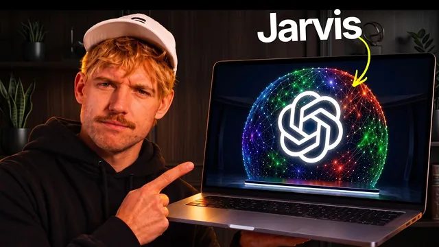

GPT-6 Astra로 자비스를 만들었다… 이건 좀 미쳤다

원본 영상 보기 →
- "연결 → 정리 → 실행"이 에이전틱 OS의 본질이에요
- 이미 연결된 도구를 재사용하는 설계입니다
- 수동 메모리 입력 + 매직 서치의 조합이 실용적이에요
한 줄 요약
유튜버 Jack Roberts가 GPT-6 Astra로 만든 "에이전틱 OS"를 시연합니다. Claude·Codex·이메일·사진·캘린더·재무 정보를 하나의 로컬 메모리에 모으고, 음성 명령으로 일정을 잡거나 이미지·영상을 생성하고 웹사이트까지 직접 편집·빌드하는 개인·비즈니스 운영체제예요.
전체 내용 정리
연결 → 정리 → 실행, 세 단계가 원리예요
Jack은 먼저 이 시스템이 왜 특별한지 설명합니다.
첫째, 사용자의 세계 전체와 연결돼야 해요. Claude, Codex, ChatGPT, 이메일, 미팅, 스킬, 사진 등 모든 컨텍스트를 끌어와야 합니다.
둘째, 그 정보를 정리하고 추론할 수 있어야 해요.
셋째, 가장 중요한 부분인데 — 단순히 ChatGPT로도 할 수 있는 일이 아니라 실제로 사용자 대신 일을 처리해야 합니다.
이 세 가지가 이 OS를 만든 핵심 기준이에요.
메모리 코어가 중심입니다
시스템의 핵심은 "메모리 코어"예요. ChatGPT와 Claude에서 나온 정보를 포함해 시스템 전체의 기억을 담고 있고, 백그라운드에서 새로운 메모리가 계속 추가됩니다. 라이트·다크 모드 전환도 지원하고요.
OS를 만들 때는 이름을 붙이고 "비즈니스 프로필"과 "라이프 프로필"을 입력해요. 사용자가 무엇에 집중하는지, 고객이 누구인지 같은 컨텍스트를 채우는 과정입니다. 이 프롬프트를 ChatGPT Astra에 주면 AI가 직접 인터뷰하듯 질문해서 필요한 컨텍스트를 만들어 줘요.
원클릭으로 기존 도구를 그대로 연결해요
Jack은 모든 걸 새로 세팅할 필요 없이 이미 연결돼 있는 도구를 그대로 가져다 쓰는 방식을 강조합니다. GPT Astra 6가 제안한 아이디어예요.
화면에는 Codex, Claude, Hermes, Open Claude 같은 코딩 에디터가 자동 인식되어 나열되고, 메모리 쪽에서는 Granola, Notion, Obsidian, 사진을 원클릭으로 가져올 수 있습니다. 여기에 Gmail, Outlook, Slack, 학교 계정, YouTube, 각종 소셜미디어 프로필, 그리고 재무 정보까지 연결할 수 있어요.
목표와 대시보드로 진행 상황을 추적해요
연결이 끝나면 목표와 전략을 설정하는 "progress" 섹션으로 넘어갑니다.
이 메모리와 컨텍스트를 기반으로 매일 무엇에 집중해야 하는지 알려 주는 "데일리 브리프"가 제공되고, 이번 주 할 일, 이번 달 목표, 이번 분기 목표까지 확인할 수 있어요.
대시보드에서는 연결된 모든 시스템의 핵심 지표를 한눈에 볼 수 있습니다(영상 속 수치는 데모용이에요). 재무 현황을 월별로 확인하거나 목표 대비 진행률, 팔로워 성장 추이도 볼 수 있고요.
메모리는 실시간으로 갱신되고, 음성으로 일정도 잡아요
Claude나 Codex에서 대화하거나 이메일을 받으면 그 내용이 자동으로 로컬에서 돌아가는 에이전틱 OS에 반영됩니다.
채팅창에서 "마지막 미팅 참가자가 누구였는지" 같은 질문을 하면 답을 찾아 주고, 원하는 모델(GPT-6 Astra, Claude 하네스, Hermes 하네스, 오픈라우터, 로컬 등)을 골라 대화할 수도 있어요.
메모리는 수동으로도 넣을 수 있습니다. "Jack Roberts가 가장 좋아하는 색은 초록색이고 좋아하는 동물은 잉글리시 스프링거 스패니얼"이라고 직접 입력해 저장한 뒤, 새 채팅에서 Astra에게 같은 질문을 하면 정확히 답을 찾아내요.
음성 비서 기능도 있습니다. "내일 11시부터 12시까지 부다페스트 시간으로 '잭 브런치 락인'이라는 일정을 잡아 줘"라고 말하면 실제로 캘린더에 일정이 생성돼요.
이미지·영상 생성과 '매직 서치'
대시보드 왼쪽 아래 "디자인 시스템"에서는 Higgsfield API를 연결해 이미지와 영상을 생성할 수 있습니다. 기존 구독형 대신 API 키만 연결하면 되고, 첫 주에는 상대적으로 저렴한 가격이 제공된다고 언급해요.
예시로 "체육관에서 프로틴 셰이크를 마시는 잉글리시 스프링거 스패니얼" 이미지를 만들고, 모델과 비율(16:9), 장수(4장)를 지정해 생성한 뒤 "버거를 더 크게 만들어 줘" 같은 후속 편집도 합니다.
"라이브러리"에서는 재밌는 기능을 보여 줘요. 컴퓨터 안의 모든 이미지를 AI가 내용 기반으로 인덱싱해서, 파일명이 "double cross"인 이미지도 "burger"로 검색하면 찾아 주는 "매직 서치"입니다.
이 외에도 스튜디오에서 캐러셀 제작과 영상 편집을 할 수 있고, 인박스에서는 학교 DM, Slack, Gmail, Outlook 메시지를 한 곳에서 확인하고 보낼 수 있어요.
웹사이트 빌더와 Zapier 연동
"웹사이트 디자인 시스템"에서는 로컬호스트 주소를 입력하면 Astra가 만든 웹사이트를 미리보기 형태로 바로 띄워 줍니다. 태블릿·모바일 화면도 확인할 수 있고, 라이트·다크 모드 전환과 카피·그래픽·디자인 요소를 직접 편집할 수 있어요.
마지막으로 Zapier를 "연결 레이어"로 소개합니다. OS에 기본으로 없는 앱이라도 Zapier를 통해 거의 다 연결할 수 있다는 설명이에요. Jack은 첫 스타트업을 Zapier로 만들었다는 일화도 덧붙입니다.
영상은 이 전체 에이전틱 메모리 시스템을 원클릭으로 내려받을 수 있는 커뮤니티 스타터 킷 소개로 마무리돼요.
핵심 인사이트
- "연결 → 정리 → 실행"이 에이전틱 OS의 본질이에요: 단순히 정보를 모으는 게 아니라 실제로 일을 대신 처리하는 것까지 가야 진짜 가치가 생깁니다. 자동화 툴을 도입할 때 "정보만 모으는 대시보드"에서 멈추지 말고 실행 단계까지 설계해야 한다는 기준으로 그대로 옮길 수 있어요.
- 이미 연결된 도구를 재사용하는 설계입니다: 새로운 통합을 일일이 만드는 대신 이미 로그인돼 있는 서비스의 연결을 그대로 활용해요. 자동화를 구축할 때 매번 처음부터 API 연동을 새로 만들 필요가 없다는 뜻입니다. 이미 있는 연결 고리를 찾는 게 먼저예요.
- 수동 메모리 입력 + 매직 서치의 조합이 실용적이에요: 원할 때 직접 정보를 저장하고, 파일명과 무관하게 내용 기반으로 검색되는 구조는 개인·업무 데이터가 흩어져 있는 1인 사업자에게 "어디에 뭘 저장했는지 기억 못 해도 찾아진다"는 실질적인 해결책이 됩니다.
오늘 당장 해볼 것
- 지금 쓰는 AI 도구에서 이미 저장된 대화와 메모를 한 곳으로 모으는 최소 버전의 "메모리 코어" 폴더를 하나 만들어 보세요. 옵시디언 볼트나 노션 데이터베이스면 충분합니다.
- 업무에서 반복적으로 참고하는 "나에 대한 정보"를 한 페이지짜리 문서로 정리해 보세요. 고객 프로필, 이번 달 목표, 이번 분기 목표 같은 거요. AI에게 매번 다시 설명하지 않아도 됩니다.
- Zapier나 Make로 지금 수동으로 옮기고 있는 앱 간 데이터를 하나만 골라 자동 연결을 시도해 보세요. 이메일→캘린더, 문의→시트 같은 것부터요.